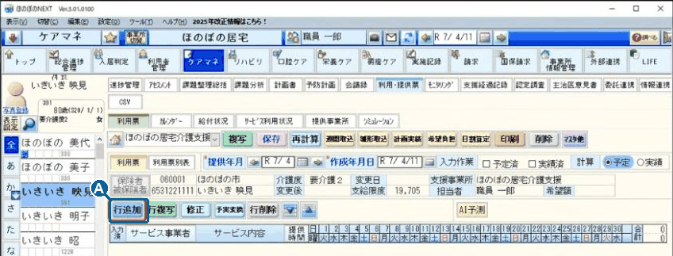
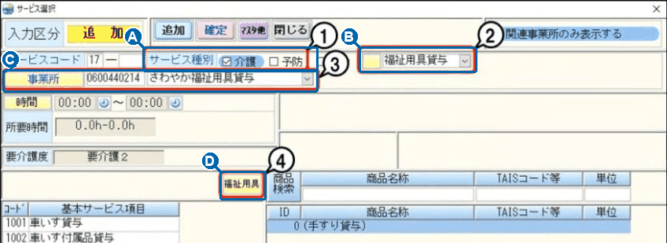
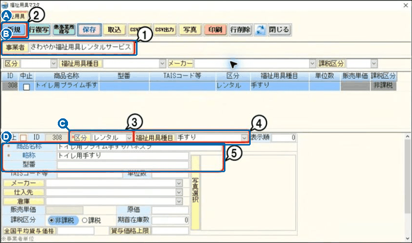
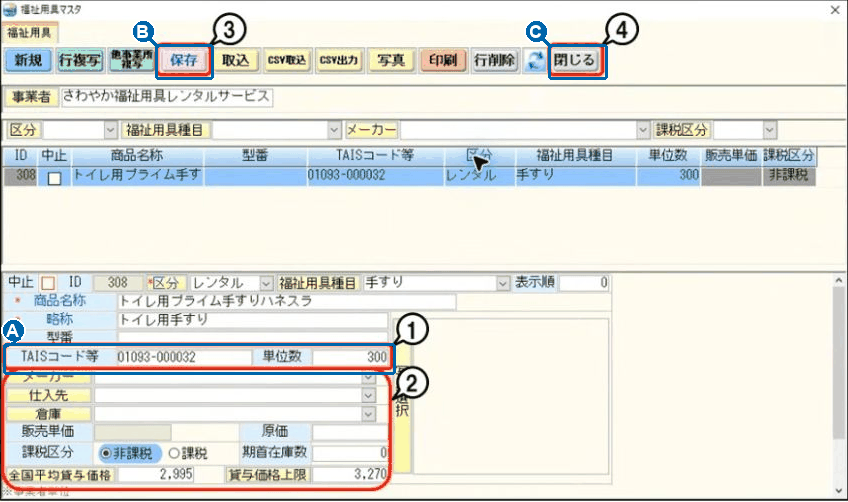
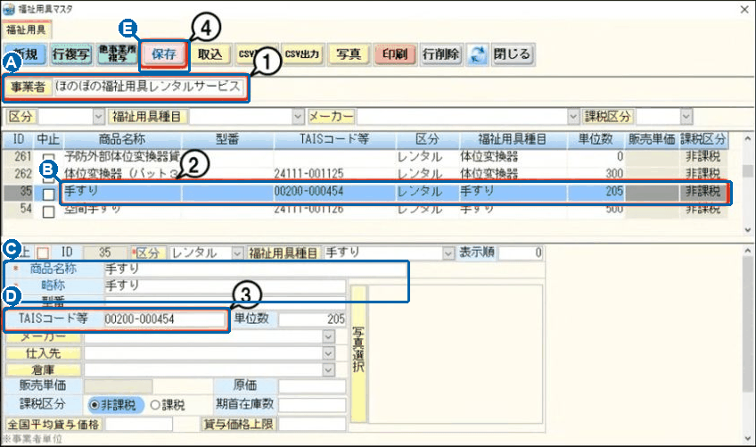
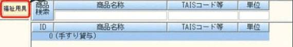
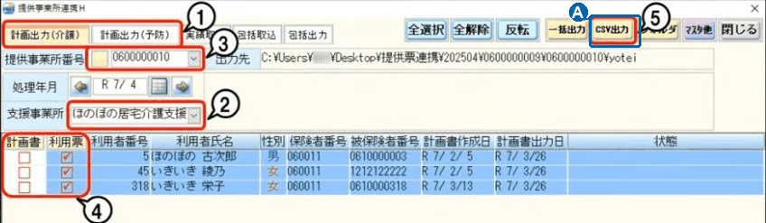

福祉用具のTAISコードを登録する
（ほのぼのNEXT・ケアマネ）
ほのぼのNEXT の「福祉用具マスタ（商品の一覧）」に、福祉用具の商品と TAISコードを 新しく登録する 手順と、登録済みの商品を直す 手順です。
はじめに
TAISコードとは、福祉用具の商品ごとに付いている番号です（車いす・手すりなどの「商品の背番号」のようなもの）。
2025年度（令和7年4月）の制度改正で、サービス利用票（第6表）と利用票別表（第7表）に、福祉用具の「品目名」と「TAISコード」を印字する欄ができました。
福祉用具マスタに TAISコードが入っていない商品は、印字されません。利用票を印刷する前に登録してください。
福祉用具の事業所に、正しい 商品名・型番・TAISコード・単位数 を聞いておきます。
どちらの作業ですか？（どちらも最初に STEP 1 をします）
画面の絵は、ソフトの会社（公式）の見本です。名前・番号は見本で、自社のデータではありません。青い A B の印が、下の説明と対応しています（黒い数字・赤い枠は公式の印です）。画像を押すと大きく表示できます。
STEP
1福祉用具マスタを開く約1分
利用票の画面から、福祉用具の商品一覧（福祉用具マスタ）を開きます。
1利用票を開いて［行追加］
- メイン画面の ↓ → ケアマネ → 利用・提供票 → 利用票 を開きます。
- 利用者と月を確認します。
- A 行追加 を押します。「サービス選択」の画面が出ます。

ここではサービスの行は追加しません。登録が終わったら、サービス選択の画面は 閉じる で閉じます。
2事業所を選んで［福祉用具］
- AB 介護 → 福祉用具貸与 を選びます。予防の利用者は 予防 → 予防用具貸与 です。
- C 実際に貸し出す 福祉用具の事業所 を選びます。
- D 福祉用具 を押します。「福祉用具マスタ」の画面が出ます。

介護と予防の両方で使う商品は、それぞれの事業所で登録が必要です。
STEP
2-A新しい商品を登録する1商品 約2分
マスタにまだない商品を追加します。すでにある商品を直すときは STEP 2-B へ。
3［新規］を押して、商品の名前などを入れる
- B 上の 事業者名 が、STEP 1 で選んだ事業所か確認します。
- A 新規 を押します。
- C 区分（貸し出しなら レンタル）と、福祉用具種目（手すり・車いす など）を選びます。
- D 商品名称・略称・型番 を入れます。「＊」の付いた欄は必ず入れます。

今ある商品を書きかえず、新しい商品として登録 します。
4TAISコードと単位数を入れて［保存］
- A TAISコード等 と 単位数 を入れます。
- 商品名・型番・種目・コード・単位数を、事業所から聞いた内容と見くらべます。
- BC 保存 → 閉じる。
- サービス選択の画面で、登録した商品が選べるか確認します。

5けた ＋ ハイフン（-）＋ 6けた を、ハイフンもふくめて すべて半角 で入れます。
形の例：00200-000454
保存 が灰色で押せないときは、登録する権限がありません。総務部へ連絡してください。
このあと STEP 3 で利用票を確認します。
STEP
2-B登録済みの商品を直す1商品 約2分
TAISコードが空いている・間違っている、商品名を直したい、というときの手順です。
3商品を選んで、直して［保存］
- A 上の 事業者名 が正しいか確認します。
- B 一覧から、直したい商品をクリックします。新規 は押しません。
- CD 下の欄で、商品名称や TAISコード等 を直します（半角 5けた-6けた）。
- E 保存 を押します。
- 一度ほかの商品を選んでから戻り、直した内容が残っているか確認します。

同じ名前の別の商品があります。型番・種目・単位数 も見て、正しい商品か確認します。
マスタを直すと、同じ商品を使っている ほかの利用者さんにも反映 されます。
STEP
3利用票で確認する
登録・修正のあとは、利用票で使っている商品と、印刷・出力の結果を確認します。
5利用票の商品と、出力を確認する
- 利用票で選んでいる商品が、今回登録・修正した正しい商品か確認します。
- 第6表・第7表に、品目名と TAISコードが印字されるか、印刷プレビューで確認します。
- A 提供票のデータを送っている場合は、その利用票をもう一度 CSV出力 します（ケアプランデータ連携のマニュアル 作業①）。


帳票の「用具名称」は、TAISコードをもとに「貸与価格の平均・上限マスタ」の商品名を使うことがあります。商品名称を直しただけでは、印字される名前が変わらないことがあります。
その利用者さんが選んでいる商品と、マスタの内容を見くらべます。
正しい商品と半角 5けた-6けた のコードが保存され、利用票で確認できたら完了です。
参考たくさんの商品をまとめて入れる
登録済みの商品のTAISコードをまとめて入れたいときは、一覧の画面で入力できます。
1［取込］を押す
- STEP 1 の手順で「福祉用具マスタ」を開きます。
- 取込 をクリックします。「貸与価格の平均・上限マスタ取込」の画面が出ます。
2一覧に入力して保存する
- TAISコード等 の列に、商品ごとに TAISコードを入力します。
- 右上の 保存 をクリックします。
列の見出し TAISコード等 や 福祉用具種目 をクリックすると、並べかえができます。空いている商品をまとめて探せます。
困ったとき
一覧に商品が出てこない
まだ登録されていません。STEP 2-A で新しく登録します。事業者名（STEP 1 で選んだ事業所）が正しいかも確認します。
TAISコードがわからない
- STEP 1 の「サービス選択」画面で、全国平均貸与価格 または 貸与価格上限 をクリックすると、「貸与価格の平均・上限マスタ」で確認できます。
- テクノエイド協会のホームページでも調べられます：福祉用具の全国平均貸与価格・上限（テクノエイド協会）
- それでもわからないときは、福祉用具の事業所に聞いてください。
利用票の画面から行かずに開きたい
利用票の画面の マスタ他 からも、福祉用具マスタを開けます。
総務部 担当：菊竹
電話：090-8490-7356
参考：ほのぼのNEXT Q&A「福祉用具の商品にTAISコードを登録したい。」（管理番号 NEXT07302）、NDソフトウェア公式サポートQ&A（記事ID 4680・8420）。画面は公式サポート掲載の見本です（2026年11月7日確認）。